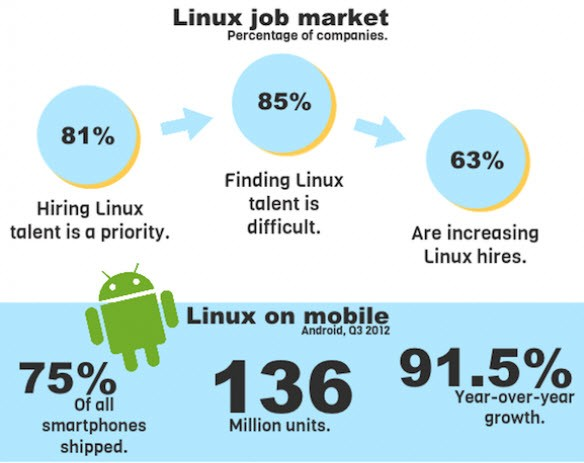

Your browser doesn't support the features required by impress.js, so you are presented with a simplified version of this presentation.
For the best experience please use the latest Chrome, Safari or Firefox browser.
Coding is Fun and it's an artistic tool
to visualize your big thoughts
or hack on your tiny ideas
Hacking is not about breaking into computers or FaceBook accounts
It's about building things
ps: this presentation
is.Hack*
The official Glider symbol adopted by the Hacker community
What is Hacking ?
The person who is consistently engaging in hacking activities, and has accepted hacking as a lifestyle and philosophy of their choice, is called a hacker
Open Source - Definition
Owners of Proprietary Softwares closely guard their Source code, and
thus cannot be modified by anyone except them
On the contrary Open Source softwares means, the source code of the
software is OPEN to general public
Source Code is made open so that people too can contribute to the
development of software
History

- In 1970’s AT&t Bell labs funded a project to create a new Operating System and came up
with UNIX.A very famous and powerfull operating system
- Soon after contribution from various Universities AT&T licensed it and made it proprietary making it unfit for teaching and learning
Richard Matthew Stallman RMS
The Founder FSF and GPL
Many flavors of Linux
Who Uses Linux ??
Almost all Hackers rely on linux
Almost all Supercomputers runs on Linux
Amazon.com online retailer recently switched entirely to Linux and
saved 17 million Dollars
Google, the most popular search engine on the web, runs on a cluster
of over 1000 Linux servers
Wikipedia runs on linux since its birth and has shifted to Ubuntu
since 2008
NYSE runs on linux
Driving Factor
Employment..?

is coding really that Fun?
How to Teach yourself to code
There are 10 kinds of people
Those who understand binary and those who don't
Chosing a Programing Language
How about WebApplications ?
There’s a temptation for programmers to say
“Start with PHP or Java”
They say this because:
- 1. it mirrors the way we learn things at school
- 2. it's how they learned ;)
IGNORE them
With those languages, you’ll spend MONTHS learning the basics so that you can do this:
start at codeacademy.com
Once you get the grip on the language!
Try implementing algorithms in your text book
Heck, Even design one of your own
Get involved with some open source project and contribute back to community
Go to codechef.com
One of the many places to kill time !
do you know what Facebook ask at interviews*?
Beautiful Strings!
Given a string s, little Johnny defined the beauty of the string as the sum of the beauty of the letters in it.
The beauty of each letter is an integer between 1 and 26, inclusive, and no two letters have the same beauty. Johnny doesn't care about whether letters are uppercase or lowercase, so that doesn't affect the beauty of a letter.
You're a student writing a report on the youth of this famous hacker. You found the string that Johnny considered most beautiful. What is the maximum possible beauty of this string?
Sample Input
5
ABbCcc
Good luck in the Facebook Hacker Cup this year!
Ignore punctuation, please :)
Sometimes test cases are hard to make up.
So I just go consult Professor Dalves
Sample Output
Case #1: 152
Case #2: 754
Case #3: 491
Case #4: 729
Case #5: 646
the only limit is your imagination
About.Me
I am Rahul Gaur
Write to me rahul.nbg@gmail.com
I Blog @ http://www.rahulgaur.info
GitHub:http://www.github.com/aregee
Use a spacebar or arrow keys to navigate